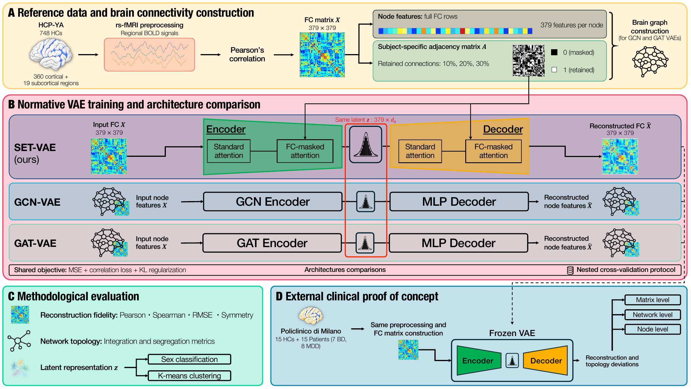
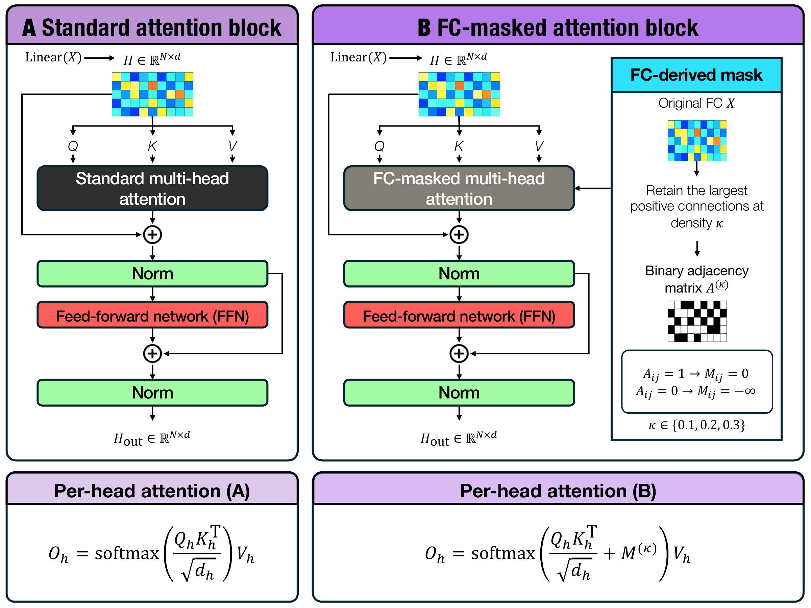

Keep the whole profile
Resting-state fMRI is converted into functional connectivity matrices. Each region retains its full connectivity profile, while the strongest positive connections define subject-specific graphs at three densities.
SET TRANSFORMER VAE / NORMATIVE MODELING
Graph-Structured Variational Autoencoders to Model Brain Functional Connectivity: A New Normative Framework Applied to Mood Disorders.
Psychiatric disorders are heterogeneous: individuals with the same diagnosis may show markedly different patterns of brain connectivity. Rather than assuming a single disorder-specific pattern, SET-VAE combines standard and FC-masked attention within a variational autoencoder trained exclusively on healthy participants. The resulting healthy reference supports exploratory investigation of reconstruction differences in an independent mood-disorder cohort, without training the model to distinguish diagnostic groups.
Resting-state fMRI is converted into functional connectivity matrices. Each region retains its full connectivity profile, while the strongest positive connections define subject-specific graphs at three densities.
Both encoder and decoder combine attention across all regions with attention masked by the connectivity graph. A probabilistic latent representation links them, allowing SET-VAE to reconstruct each participant’s network.
SET-VAE is compared with two different graph-based models, GCN-VAE and GAT-VAE, using shared nested cross-validation on HCP-YA. The trained models are then applied without retraining to an independent cohort with healthy controls and people with mood disorders.

Standard attention exchanges information across all regions. FC-masked attention restricts interactions to the retained connections, bringing each participant’s graph into the reconstruction process.

SET-VAE achieved the lowest mean reconstruction error at all three connectivity densities. At 20% density, RMSE was approximately 13% lower than GAT-VAE and 32% lower than GCN-VAE, alongside better preservation of most network properties.
In the external sample of 15 controls and 15 people with bipolar or major depressive disorder, patients showed greater reconstruction discrepancies. This provides an exploratory application of the healthy reference to mood-disorder research.
The comparison evaluates complete architectures, including different decoders. The small external sample and demographic and acquisition differences limit clinical interpretation; these findings do not establish individual diagnostic performance.